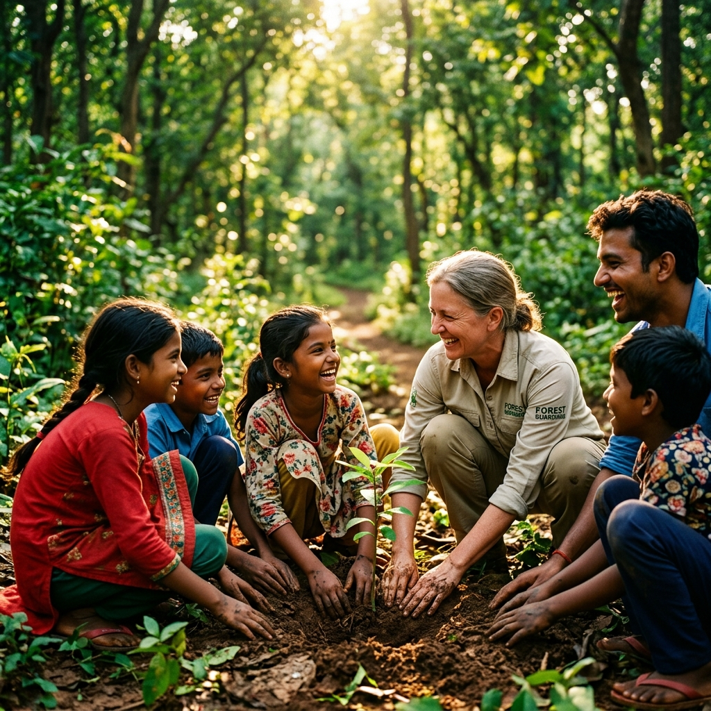

About Us
Our Story
Antarbhag Foundation is a visionary non-profit organization established to drive sustainable change.
"Antarbhag", meaning "Core" in Hindi, encapsulates our profound conviction that enduring transformation starts with fortifying an individual's deep-rooted values.
By fostering a strong moral compass within the youth, we equip them with the conscientious awareness needed to confront modern environmental and social challenges head-on.
Empowered with this resilient inner foundation, individuals become the driving force behind thriving communities that co-exist responsibly with our planet.

Our Core Values
Inner Transformation
We believe that true change starts within, and our core values drive our actions for the greater good.
Sustainability
We prioritize environmentally conscious practices and long-term sustainable development for the planet.
Responsibility
Promoting individual and collective accountability for environmental actions and community welfare.
Inclusivity
Striving for diversity, equity, and social justice in every project we undertake.
Collaboration
Fostering global and local partnerships for a collective action that creates massive impact.
Strategic Approach
-
Community Engagement:
Grassroots initiatives and outreach programs designed for direct social impact.
-
Education and Training:
Interactive workshops and capacity-building programs to empower the youth.
-
Research and Advocacy:
Policy analysis and advocacy to drive structural environmental protection.
-
Partnerships and Collaborations:
Networking with stakeholders, NGOs, and government agencies to scale solutions.
-
Awareness and Outreach:
High-impact social media campaigns and public awareness events.